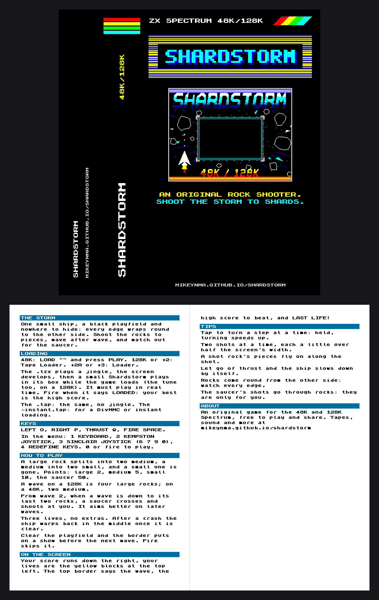

48K128K20 November 2026
How to play: the keys, hints, and a tape inlay
Everything to get going: how to load it, the keys and joysticks, how the points and the saucer work, and hints with the answers hidden until you ask. And a cassette inlay to print at real size, with a leaflet that folds into the case.
Shardstorm takes four keys and a steady nerve. Shoot the rocks to pieces, clear the playfield, and the next wave comes in. When the going gets hard, the hints below give a nudge, and the answer only if you ask for it.

How to play
Loading
On a 48K, type LOAD "" and play the tape; on a 128K or +2, choose Tape Loader; on a +2A or +3, Loader. Take the tape for your machine. The .tzx plays a jingle, develops its loading screen, then lets you play a small Shardstorm in the screen's box while the game loads, with the tune on a 128K: it must play in real time, so switch off your emulator's instant and fast loading. Press fire when it says LOADED, and your best score from the box becomes the game's high score. The .tap is the same without the jingle; the -instant.tap is the plain tape, for a DivMMC or instant loading. Downloads are on the front page.
The keys
O turns left, P right, Q thrusts, SPACE fires. In the menu, 1 picks the keyboard, 2 a Kempston joystick, 3 a Sinclair joystick (6 and 7 turn, 9 thrusts, 0 fires) and 4 lets you choose your own four keys. 0 or fire plays.
Playing
A large rock splits into two medium ones, a medium into two small, and a small one is gone. Points: a large rock 2, a medium 5, a small 10, the saucer 50. A wave on a 128K is four large rocks; on a 48K, two medium. From wave 2, once a wave is down to its last two rocks, a saucer crosses from side to side and fires at you about once a second. Your score runs down the right, your lives are the yellow blocks at the top left, and the top border tells you the wave and the high score to beat. Three lives, and no extra ones: after a crash, the ship warps back in the middle once the middle is clear. Clear the playfield and the border puts on a show before the next wave; fire skips it.
Hints
Which rocks are worth shooting? (show the answer)
The smaller the better: a small rock is worth 10, five times a large one. The saucer is worth 50.
I keep turning past what I aim at. (show the answer)
Turning speeds up the longer you hold it. Tap the key to turn one step at a time; there are sixteen.
A rock came from nowhere and hit me. (show the answer)
Everything wraps: a rock leaving one edge comes straight back in at the other. Keep an eye on every edge, not just what is in front of you.
I fire and nothing comes out. (show the answer)
Only two of your shots can be in the air at once, and each flies about 160 pixels before it is gone. Fewer, well-aimed shots beat holding fire down.
When does the saucer come, and how good is its aim? (show the answer)
From wave 2, once a wave is down to its last two rocks. It aims roughly on waves 2 and 3, better on 4 to 6, and straight at you from wave 7. Its shots pass through rocks; they are only for you. A wave is not over while it flies, so shoot it for 50 or wait for it to leave by the far side.
Shooting a rock up close sent the pieces everywhere. (show the answer)
The pieces keep the rock's own drift and spread apart, with a push along your shot. Shoot from a little way off, so they have room to spread before they reach you.
Is there an extra life? (show the answer)
No: three lives a game. After a crash the ship comes back in the middle once the middle is clear, and nothing can hit it while it warps in. The top border says LAST LIFE! when you are down to one.
The ship slides about too much. (show the answer)
Let go of thrust and it slows down by itself. Short bursts of thrust keep it under control.
How do I start with a high score to beat? (show the answer)
Play the game in the box while the .tzx or .tap loads: your best there becomes Shardstorm's high score. It lasts until the Spectrum is switched off.
Screens
The inlay
At real size it is one A4 sheet: the inlay card and a folded leaflet. Click to see it bigger.

Download
Print the inlay
For the 48K and the 128K. One A4 sheet, single-sided: print it at 100% (not "fit to page"), cut on the corner marks and fold on the dashed ones. The card faces out of the case with its flap behind; the leaflet folds in half and slips in behind it.
- Pick your machine's tape. The 48K tape for a 48K; the 128K tape for a 128K, +2, +2A or +3 (pick Tape Loader, or Loader on a +2A or +3). Each says so if you load it on the other. The loader in the
.tzxand.taphas been checked against the 48K's and the 128K's timing; on a +2A or +3, whose timing differs a little, the-instant.tapis the safe one. - The
.tzxis the whole thing: a jingle on the tape, the loading screen developing, and a small game to play in its box while Shardstorm loads - with the tune on a 128K. Its own loader reads the tape, so the emulator must play it in real time, as ZX Spin, Retro Virtual Machine and Fuse do: switch off instant and fast loading. Press fire when it says LOADED. - The
.tapis the same without the jingle, for an emulator that only takes.tapfiles. - The
-instant.tapis the plain tape, every block for the ROM: for a DivMMC, or an emulator's instant loading, which skip any loader of its own. - On a real Spectrum: play the
.tzxinto the EAR socket from a TZX player.